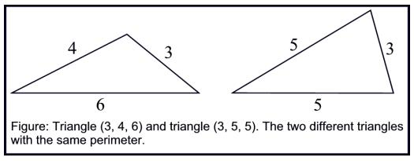

Problem C
How Many Triangles?
Input: standard input
Output: standard output
A triangle is a polygon with three sides and a positive area (greater than zero). Two different triangles can have the same perimeter. For example the two different triangles (3, 4, 6) and (3, 5, 5) has the same perimeter 13. In this problem you will be given an integer perimeter. Your task is to determine how many different triangles there are having this perimeter, such that the length of all the sides of the triangle are also integers." Two triangles are same if the lengths of three sides of a triangle are equal to the length of three sides of the other triangle.

For each line of input produce one line of output, which contains the serial of output as shown in the output for sample input followed by an integer T. Here T denotes the number different triangles with perimeter N. You can safely assume that T will fit in a 64-bit signed integer.
57320920391
0 |
Case
1: 1 Case
2: 2 Case 3:
2145622901773234 |
Problem Setter: Shahriar
Manzoor